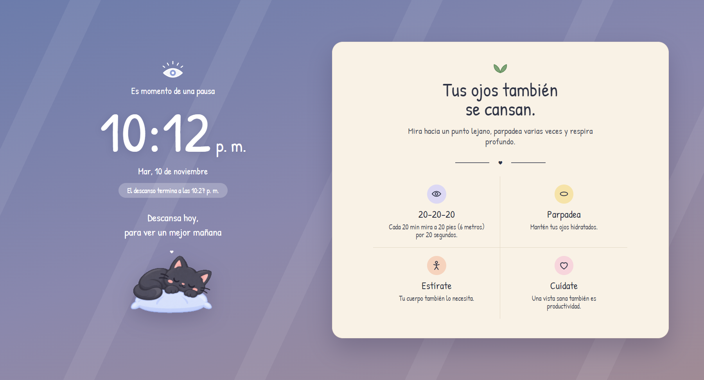
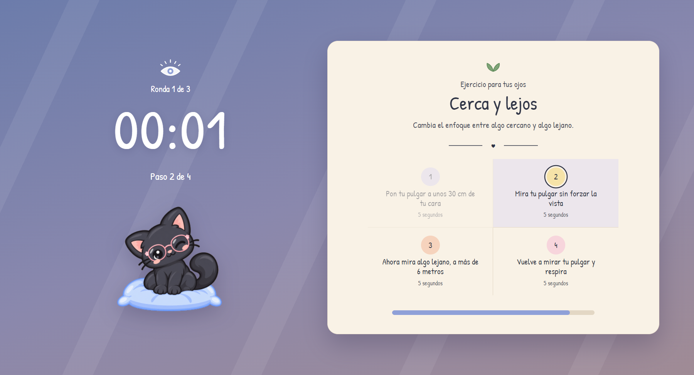
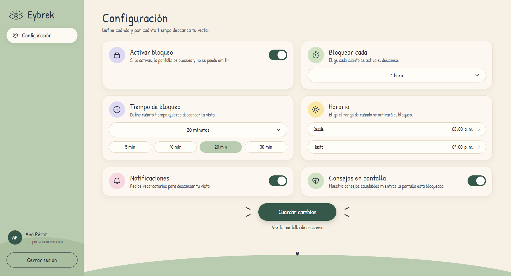

Pausas obligatorias
Eliges cada cuánto descansar, cuánto dura la pausa y en qué horario. Un minuto antes recibes un aviso.
Tus ojos también necesitan un descanso
Una aplicación de escritorio para Windows que convierte la recomendación de descansar la vista en una pausa que de verdad ocurre.
El aplicativo
Pasar muchas horas frente al computador mantiene la mirada fija y cansa la vista. Las pausas se olvidan, se posponen o se ignoran. EyBrek resuelve eso: bloquea la pantalla de forma periódica durante el tiempo que tú configures y, mientras descansas, te guía con ejercicios visuales. No depende de que decidas detenerte: la pausa llega sola.
Eliges cada cuánto descansar, cuánto dura la pausa y en qué horario. Un minuto antes recibes un aviso.
Doce ejercicios para los ojos, cada uno en cuatro pasos con su tiempo. En cada pausa aparece uno distinto.
Recordatorios sencillos durante el descanso: mirar lejos, parpadear, estirarte y cuidarte.
La configuración se guarda en la nube y también en tu equipo, así que sigue funcionando sin Internet.
La pausa
Intervalo, duración, horario y avisos.
Un minuto antes del descanso.
Cubre toda la pantalla, sin opción de omitir.
Un ejercicio en cuatro pasos y luego descansas.


Tú decides

Equipo
Proyecto de aula de Diseño de Software I · Grupo 3 · Periodo 2026B
Ingeniería de Software · Universidad de Santander (UDES)
Estudiante de Ingeniería de Software
Estudiante de Ingeniería de Software

Proyecto completo
El archivo incluye todo el proyecto:
EyBrek-Instalador-1.0.0.exe).Archivo .zip · 468 MB · Windows 10 u 11 para ejecutar la aplicación.